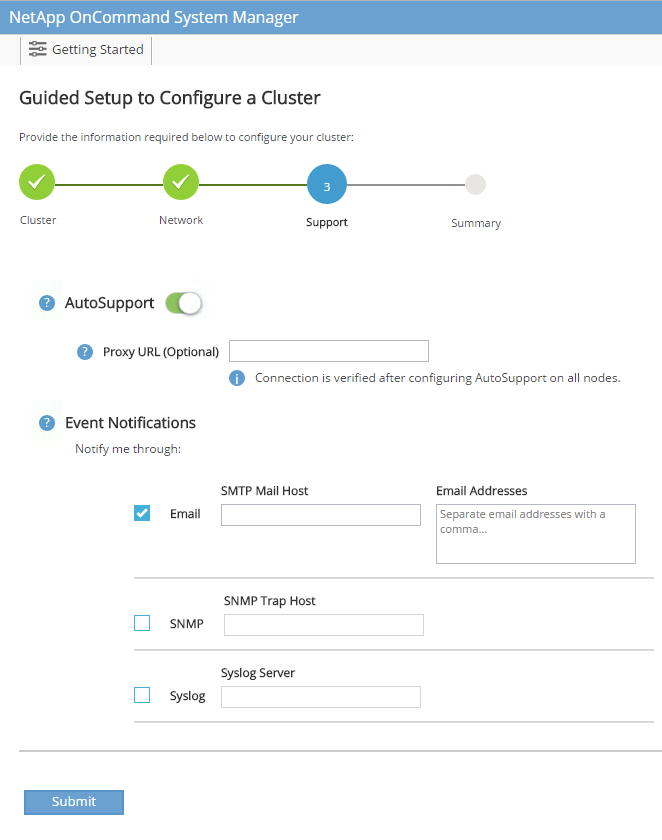

NetApp storage deployment procedure (part 1)
Contributors
 Download PDF of this page
Download PDF of this page
This section describes the NetApp AFF storage deployment procedure.
NetApp storage controller AFF C190 Series installation
NetApp Hardware Universe
The NetApp Hardware Universe (HWU) application provides supported hardware and software components for any specific ONTAP version. It provides configuration information for all the NetApp storage appliances currently supported by ONTAP software. It also provides a table of component compatibilities.
Confirm that the hardware and software components that you would like to use are supported with the version of ONTAP that you plan to install:
Access the HWU application to view the system configuration guides. Click the Controllers tab to view the compatibility between different version of the ONTAP software and the NetApp storage appliances with your desired specifications.
Alternatively, to compare components by storage appliance, click Compare Storage Systems.
| Controller AFFC190 Series prerequisites |
|---|
To plan the physical location of the storage systems, see the NetApp Hardware Universe. Refer to the following sections:
|
Storage controllers
Follow the physical installation procedures for the controllers in the AFF C190 Documentation.
NetApp ONTAP 9.6
Configuration worksheet
Before running the setup script, complete the configuration worksheet from the product manual. The configuration worksheet is available in the ONTAP 9.6 Software Setup Guide.

|
This system is set up in a two-node switchless cluster configuration. |
The following table provides the ONTAP 9.6 installation and configuration information.
| Cluster detail | Cluster detail value |
|---|---|
Cluster node A IP address |
<<var_nodeA_mgmt_ip>> |
Cluster node A netmask |
<<var_nodeA_mgmt_mask>> |
Cluster node A gateway |
<<var_nodeA_mgmt_gateway>> |
Cluster node A name |
<<var_nodeA>> |
Cluster node B IP address |
<<var_nodeB_mgmt_ip>> |
Cluster node B netmask |
<<var_nodeB_mgmt_mask>> |
Cluster node B gateway |
<<var_nodeB_mgmt_gateway>> |
Cluster node B name |
<<var_nodeB>> |
ONTAP 9.6 URL |
<<var_url_boot_software>> |
Name for cluster |
<<var_clustername>> |
Cluster management IP address |
<<var_clustermgmt_ip>> |
Cluster B gateway |
<<var_clustermgmt_gateway>> |
Cluster B netmask |
<<var_clustermgmt_mask>> |
Domain name |
<<var_domain_name>> |
DNS server IP (you can enter more than one) |
<var_dns_server_ip |
NTP server IP (you can enter more than one) |
<<var_ntp_server_ip>> |
Configure Node A
To configure node A, complete the following steps:
-
Connect to the storage system console port. You should see a Loader-A prompt. However, if the storage system is in a reboot loop, press Ctrl-C to exit the autoboot loop when you see this message:
Starting AUTOBOOT press Ctrl-C to abort…
Allow the system to boot.
autoboot
-
Press Ctrl-C to enter the Boot menu.
If ONTAP 9.6 is not the version of software being booted, continue with the following steps to install new software. If ONTAP 9.6 is the version being booted, select option 8 and y to reboot the node. Then, continue with step 14. -
To install new software, select option 7.
-
Enter y to perform an upgrade.
-
Select e0M for the network port you want to use for the download.
-
Enter y to reboot now.
-
Enter the IP address, netmask, and default gateway for e0M in their respective places.
<<var_nodeA_mgmt_ip>> <<var_nodeA_mgmt_mask>> <<var_nodeA_mgmt_gateway>>
-
Enter the URL where the software can be found.
This web server must be pingable. <<var_url_boot_software>>
-
Press Enter for the user name, indicating no user name.
-
Enter y to set the newly installed software as the default to be used for subsequent reboots.
-
Enter y to reboot the node.
When installing new software, the system might perform firmware upgrades to the BIOS and adapter cards, causing reboots and possible stops at the Loader-A prompt. If these actions occur, the system might deviate from this procedure. -
Press Ctrl-C to enter the Boot menu.
-
Select option 4 for Clean Configuration and Initialize All Disks.
-
Enter y to zero disks, reset config, and install a new file system.
-
Enter y to erase all the data on the disks.
The initialization and creation of the root aggregate can take 90 minutes or more to complete, depending on the number and type of disks attached. When initialization is complete, the storage system reboots. Note that SSDs take considerably less time to initialize. You can continue with the node B configuration while the disks for node A are zeroing.
While node A is initializing, begin configuring node B.
Configure Node B
To configure node B, complete the following steps:
-
Connect to the storage system console port. You should see a Loader-A prompt. However, if the storage system is in a reboot loop, press Ctrl-C to exit the autoboot loop when you see this message:
Starting AUTOBOOT press Ctrl-C to abort…
-
Press Ctrl-C to enter the Boot menu.
autoboot
-
Press Ctrl-C when prompted.
If ONTAP 9.6 is not the version of software being booted, continue with the following steps to install new software. If ONTAP 9.6 is the version being booted, select option 8 and y to reboot the node. Then, continue with step 14. -
To install new software, select option 7.A.
-
Enter y to perform an upgrade.
-
Select e0M for the network port you want to use for the download.
-
Enter y to reboot now.
-
Enter the IP address, netmask, and default gateway for e0M in their respective places.
<<var_nodeB_mgmt_ip>> <<var_nodeB_mgmt_ip>><<var_nodeB_mgmt_gateway>>
-
Enter the URL where the software can be found.
This web server must be pingable. <<var_url_boot_software>>
-
Press Enter for the user name, indicating no user name.
-
Enter y to set the newly installed software as the default to be used for subsequent reboots.
-
Enter y to reboot the node.
When installing new software, the system might perform firmware upgrades to the BIOS and adapter cards, causing reboots and possible stops at the Loader-A prompt. If these actions occur, the system might deviate from this procedure. -
Press Ctrl-C to enter the Boot menu.
-
Select option 4 for Clean Configuration and Initialize All Disks.
-
Enter y to zero disks, reset config, and install a new file system.
-
Enter y to erase all the data on the disks.
The initialization and creation of the root aggregate can take 90 minutes or more to complete, depending on the number and type of disks attached. When initialization is complete, the storage system reboots. Note that SSDs take considerably less time to initialize.
Continuation of the node A configuration and cluster configuration
From a console port program attached to the storage controller A (node A) console port, run the node setup script. This script appears when ONTAP 9.6 boots on the node for the first time.
|
|
The node and cluster setup procedure has changed slightly in ONTAP 9.6. The cluster setup wizard is now used to configure the first node in a cluster, and NetApp ONTAP System Manager (formerly OnCommand® System Manager) is used to configure the cluster. |
-
Follow the prompts to set up node A.
Welcome to the cluster setup wizard. You can enter the following commands at any time: "help" or "?" - if you want to have a question clarified, "back" - if you want to change previously answered questions, and "exit" or "quit" - if you want to quit the cluster setup wizard. Any changes you made before quitting will be saved. You can return to cluster setup at any time by typing "cluster setup". To accept a default or omit a question, do not enter a value. This system will send event messages and periodic reports to NetApp Technical Support. To disable this feature, enter autosupport modify -support disable within 24 hours. Enabling AutoSupport can significantly speed problem determination and resolution should a problem occur on your system. For further information on AutoSupport, see: http://support.netapp.com/autosupport/ Type yes to confirm and continue {yes}: yes Enter the node management interface port [e0M]: Enter the node management interface IP address: <<var_nodeA_mgmt_ip>> Enter the node management interface netmask: <<var_nodeA_mgmt_mask>> Enter the node management interface default gateway: <<var_nodeA_mgmt_gateway>> A node management interface on port e0M with IP address <<var_nodeA_mgmt_ip>> has been created. Use your web browser to complete cluster setup by accessing https://<<var_nodeA_mgmt_ip>> Otherwise, press Enter to complete cluster setup using the command line interface: -
Navigate to the IP address of the node’s management interface.
Cluster setup can also be performed by using the CLI. This document describes cluster setup using System Manager guided setup. -
Click Guided Setup to configure the cluster.
-
Enter
<<var_clustername>>for the cluster name and<<var_nodeA>>and<<var_nodeB>>for each of the nodes that you are configuring. Enter the password that you would like to use for the storage system. Select Switchless Cluster for the cluster type. Enter the cluster base license. -
You can also enter feature licenses for Cluster, NFS, and iSCSI.
-
You see a status message stating the cluster is being created. This status message cycles through several statuses. This process takes several minutes.
-
Configure the network.
-
Deselect the IP Address Range option.
-
Enter
<<var_clustermgmt_ip>>in the Cluster Management IP Address field,<<var_clustermgmt_mask>>in the Netmask field, and<<var_clustermgmt_gateway>>in the Gateway field. Use the … selector in the Port field to select e0M of node A. -
The node management IP for node A is already populated. Enter
<<var_nodeA_mgmt_ip>>for node B. -
Enter
<<var_domain_name>>in the DNS Domain Name field. Enter<<var_dns_server_ip>>in the DNS Server IP Address field.
You can enter multiple DNS server IP addresses. -
Enter
10.63.172.162in the Primary NTP Server field.
You can also enter an alternate NTP server. The IP address 10.63.172.162from<<var_ntp_server_ip>>is the Nexus Mgmt IP.
-
-
Configure the support information.
-
If your environment requires a proxy to access AutoSupport, enter the URL in Proxy URL.
-
Enter the SMTP mail host and email address for event notifications.
You must, at a minimum, set up the event notification method before you can proceed. You can select any of the methods. 
When the system indicates that the cluster configuration has completed, click Manage Your Cluster to configure the storage.
-
Continuation of the storage cluster configuration
After the configuration of the storage nodes and base cluster, you can continue with the configuration of the storage cluster.
Zero all spare disks
To zero all spare disks in the cluster, run the following command:
disk zerospares
Set the on-board UTA2 ports personality
-
Verify the current mode and the current type for the ports by running the
ucadmin showcommand.AFF C190::> ucadmin show Current Current Pending Pending Admin Node Adapter Mode Type Mode Type Status ------------ ------- ------- --------- ------- --------- ----------- AFF C190_A 0c cna target - - online AFF C190_A 0d cna target - - online AFF C190_A 0e cna target - - online AFF C190_A 0f cna target - - online AFF C190_B 0c cna target - - online AFF C190_B 0d cna target - - online AFF C190_B 0e cna target - - online AFF C190_B 0f cna target - - online 8 entries were displayed. -
Verify that the current mode of the ports that are in use is cna and that the current type is set to target. If not, change the port personality by using the following command:
ucadmin modify -node <home node of the port> -adapter <port name> -mode cna -type target
The ports must be offline to run the previous command. To take a port offline, run the following command: network fcp adapter modify -node <home node of the port> -adapter <port name> -state down
If you changed the port personality, you must reboot each node for the change to take effect.
Rename the management logical interfaces
To rename the management logical interfaces (LIFs), complete the following steps:
-
Show the current management LIF names.
network interface show –vserver <<clustername>>
-
Rename the cluster management LIF.
network interface rename –vserver <<clustername>> –lif cluster_setup_cluster_mgmt_lif_1 –newname cluster_mgmt
-
Rename the node B management LIF.
network interface rename -vserver <<clustername>> -lif cluster_setup_node_mgmt_lif_AFF C190_B_1 -newname AFF C190-02_mgmt1
Set auto-revert on cluster management
Set the auto-revert parameter on the cluster management interface.
network interface modify –vserver <<clustername>> -lif cluster_mgmt –auto-revert true
Set up the service processor network interface
To assign a static IPv4 address to the service processor on each node, run the following commands:
system service-processor network modify –node <<var_nodeA>> -address-family IPv4 –enable true –dhcp none –ip-address <<var_nodeA_sp_ip>> -netmask <<var_nodeA_sp_mask>> -gateway <<var_nodeA_sp_gateway>> system service-processor network modify –node <<var_nodeB>> -address-family IPv4 –enable true –dhcp none –ip-address <<var_nodeB_sp_ip>> -netmask <<var_nodeB_sp_mask>> -gateway <<var_nodeB_sp_gateway>>
|
|
The service processor IP addresses should be in the same subnet as the node management IP addresses. |
Enable storage failover in ONTAP
To confirm that storage failover is enabled, run the following commands in a failover pair:
-
Verify the status of storage failover.
storage failover show
Both <<var_nodeA>>and<<var_nodeB>>must be able to perform a takeover. Go to step 3 if the nodes can perform a takeover. -
Enable failover on one of the two nodes.
storage failover modify -node <<var_nodeA>> -enabled true
Enabling failover on one node enables it for both nodes. -
Verify the HA status of the two-node cluster.
This step is not applicable for clusters with more than two nodes. cluster ha show
-
Go to step 6 if high availability is configured. If high availability is configured, you see the following message upon issuing the command:
High Availability Configured: true
-
Enable HA mode only for the two-node cluster.
Do not run this command for clusters with more than two nodes because it causes problems with failover. cluster ha modify -configured true Do you want to continue? {y|n}: y -
Verify that hardware assist is correctly configured and, if needed, modify the partner IP address.
storage failover hwassist show
The message Keep Alive Status: Error:indicates that one of the controllers did not receive hwassist keep alive alerts from its partner, indicating that hardware assist is not configured. Run the following commands to configure hardware assist.storage failover modify –hwassist-partner-ip <<var_nodeB_mgmt_ip>> -node <<var_nodeA>> storage failover modify –hwassist-partner-ip <<var_nodeA_mgmt_ip>> -node <<var_nodeB>>
Create a jumbo frame MTU broadcast domain in ONTAP
To create a data broadcast domain with an MTU of 9000, run the following commands:
broadcast-domain create -broadcast-domain Infra_NFS -mtu 9000 broadcast-domain create -broadcast-domain Infra_iSCSI-A -mtu 9000 broadcast-domain create -broadcast-domain Infra_iSCSI-B -mtu 9000
Remove the data ports from the default broadcast domain
The 10GbE data ports are used for iSCSI/NFS traffic, and these ports should be removed from the default domain. Ports e0e and e0f are not used and should also be removed from the default domain.
To remove the ports from the broadcast domain, run the following command:
broadcast-domain remove-ports -broadcast-domain Default -ports <<var_nodeA>>:e0c, <<var_nodeA>>:e0d, <<var_nodeA>>:e0e, <<var_nodeA>>:e0f, <<var_nodeB>>:e0c, <<var_nodeB>>:e0d, <<var_nodeA>>:e0e, <<var_nodeA>>:e0f
Disable flow control on UTA2 ports
It is a NetApp best practice to disable flow control on all UTA2 ports that are connected to external devices. To disable flow control, run the following command:
net port modify -node <<var_nodeA>> -port e0c -flowcontrol-admin none
Warning: Changing the network port settings will cause a several second interruption in carrier.
Do you want to continue? {y|n}: y
net port modify -node <<var_nodeA>> -port e0d -flowcontrol-admin none
Warning: Changing the network port settings will cause a several second interruption in carrier.
Do you want to continue? {y|n}: y
net port modify -node <<var_nodeA>> -port e0e -flowcontrol-admin none
Warning: Changing the network port settings will cause a several second interruption in carrier.
Do you want to continue? {y|n}: y
net port modify -node <<var_nodeA>> -port e0f -flowcontrol-admin none
Warning: Changing the network port settings will cause a several second interruption in carrier.
Do you want to continue? {y|n}: y
net port modify -node <<var_nodeB>> -port e0c -flowcontrol-admin none
Warning: Changing the network port settings will cause a several second interruption in carrier.
Do you want to continue? {y|n}: y
net port modify -node <<var_nodeB>> -port e0d -flowcontrol-admin none
Warning: Changing the network port settings will cause a several second interruption in carrier.
Do you want to continue? {y|n}: y
net port modify -node <<var_nodeB>> -port e0e -flowcontrol-admin none
Warning: Changing the network port settings will cause a several second interruption in carrier.
Do you want to continue? {y|n}: y
net port modify -node <<var_nodeB>> -port e0f -flowcontrol-admin none
Warning: Changing the network port settings will cause a several second interruption in carrier.
Do you want to continue? {y|n}: y
Configure the interface group LACP in ONTAP
This type of interface group requires two or more Ethernet interfaces and a switch that supports LACP. make sure it’s configured based on the steps in this guide in section 5.1.
From the cluster prompt, complete the following steps:
ifgrp create -node <<var_nodeA>> -ifgrp a0a -distr-func port -mode multimode_lacp network port ifgrp add-port -node <<var_nodeA>> -ifgrp a0a -port e0c network port ifgrp add-port -node <<var_nodeA>> -ifgrp a0a -port e0d ifgrp create -node << var_nodeB>> -ifgrp a0a -distr-func port -mode multimode_lacp network port ifgrp add-port -node <<var_nodeB>> -ifgrp a0a -port e0c network port ifgrp add-port -node <<var_nodeB>> -ifgrp a0a -port e0d
Configure the jumbo frames in ONTAP
To configure an ONTAP network port to use jumbo frames (usually with an MTU of 9,000 bytes), run the following commands from the cluster shell:
AFF C190::> network port modify -node node_A -port a0a -mtu 9000
Warning: This command will cause a several second interruption of service on
this network port.
Do you want to continue? {y|n}: y
AFF C190::> network port modify -node node_B -port a0a -mtu 9000
Warning: This command will cause a several second interruption of service on
this network port.
Do you want to continue? {y|n}: y
Create VLANs in ONTAP
To create VLANs in ONTAP, complete the following steps:
-
Create NFS VLAN ports and add them to the data broadcast domain.
network port vlan create –node <<var_nodeA>> -vlan-name a0a-<<var_nfs_vlan_id>> network port vlan create –node <<var_nodeB>> -vlan-name a0a-<<var_nfs_vlan_id>> broadcast-domain add-ports -broadcast-domain Infra_NFS -ports <<var_nodeA>>:a0a-<<var_nfs_vlan_id>>, <<var_nodeB>>:a0a-<<var_nfs_vlan_id>>
-
Create iSCSI VLAN ports and add them to the data broadcast domain.
network port vlan create –node <<var_nodeA>> -vlan-name a0a-<<var_iscsi_vlan_A_id>> network port vlan create –node <<var_nodeA>> -vlan-name a0a-<<var_iscsi_vlan_B_id>> network port vlan create –node <<var_nodeB>> -vlan-name a0a-<<var_iscsi_vlan_A_id>> network port vlan create –node <<var_nodeB>> -vlan-name a0a-<<var_iscsi_vlan_B_id>> broadcast-domain add-ports -broadcast-domain Infra_iSCSI-A -ports <<var_nodeA>>:a0a-<<var_iscsi_vlan_A_id>>,<<var_nodeB>>:a0a-<<var_iscsi_vlan_A_id>> broadcast-domain add-ports -broadcast-domain Infra_iSCSI-B -ports <<var_nodeA>>:a0a-<<var_iscsi_vlan_B_id>>,<<var_nodeB>>:a0a-<<var_iscsi_vlan_B_id>>
-
Create MGMT-VLAN ports.
network port vlan create –node <<var_nodeA>> -vlan-name a0a-<<mgmt_vlan_id>> network port vlan create –node <<var_nodeB>> -vlan-name a0a-<<mgmt_vlan_id>>
Create data aggregates in ONTAP
An aggregate containing the root volume is created during the ONTAP setup process. To create additional aggregates, determine the aggregate name, the node on which to create it, and the number of disks it contains.
To create aggregates, run the following commands:
aggr create -aggregate aggr1_nodeA -node <<var_nodeA>> -diskcount <<var_num_disks>> aggr create -aggregate aggr1_nodeB -node <<var_nodeB>> -diskcount <<var_num_disks>>
|
|
Retain at least one disk (select the largest disk) in the configuration as a spare. A best practice is to have at least one spare for each disk type and size. |
|
|
Start with five disks; you can add disks to an aggregate when additional storage is required. |
|
|
The aggregate cannot be created until disk zeroing completes. Run the aggr show command to display the aggregate creation status. Do not proceed until aggr1_nodeA is online.
|
Configure Time Zone in ONTAP
To configure time synchronization and to set the time zone on the cluster, run the following command:
timezone <<var_timezone>>
|
|
For example, in the eastern United States, the time zone is America/New_York. After you begin typing the time zone name, press the Tab key to see available options. |
Configure SNMP in ONTAP
To configure the SNMP, complete the following steps:
-
Configure SNMP basic information, such as the location and contact. When polled, this information is visible as the
sysLocationandsysContactvariables in SNMP.snmp contact <<var_snmp_contact>> snmp location “<<var_snmp_location>>” snmp init 1 options snmp.enable on
-
Configure SNMP traps to send to remote hosts.
snmp traphost add <<var_snmp_server_fqdn>>
Configure SNMPv1 in ONTAP
To configure SNMPv1, set the shared secret plain-text password called a community.
snmp community add ro <<var_snmp_community>>
|
|
Use the snmp community delete all command with caution. If community strings are used for other monitoring products, this command removes them.
|
Configure SNMPv3 in ONTAP
SNMPv3 requires that you define and configure a user for authentication. To configure SNMPv3, complete the following steps:
-
Run the
security snmpuserscommand to view the engine ID. -
Create a user called
snmpv3user.security login create -username snmpv3user -authmethod usm -application snmp
-
Enter the authoritative entity’s engine ID and select md5 as the authentication protocol.
-
Enter an eight-character minimum-length password for the authentication protocol when prompted.
-
Select des as the privacy protocol.
-
Enter an eight-character minimum-length password for the privacy protocol when prompted.
Configure AutoSupport HTTPS in ONTAP
The NetApp AutoSupport tool sends support summary information to NetApp through HTTPS. To configure AutoSupport, run the following command:
system node autosupport modify -node * -state enable –mail-hosts <<var_mailhost>> -transport https -support enable -noteto <<var_storage_admin_email>>
Create a storage virtual machine
To create an infrastructure storage virtual machine (SVM), complete the following steps:
-
Run the
vserver createcommand.vserver create –vserver Infra-SVM –rootvolume rootvol –aggregate aggr1_nodeA –rootvolume-security-style unix
-
Add the data aggregate to the infra-SVM aggregate list for the NetApp VSC.
vserver modify -vserver Infra-SVM -aggr-list aggr1_nodeA,aggr1_nodeB
-
Remove the unused storage protocols from the SVM, leaving NFS and iSCSI.
vserver remove-protocols –vserver Infra-SVM -protocols cifs,ndmp,fcp
-
Enable and run the NFS protocol in the infra-SVM SVM.
nfs create -vserver Infra-SVM -udp disabled
-
Turn on the
SVM vstorageparameter for the NetApp NFS VAAI plug-in. Then, verify that NFS has been configured.vserver nfs modify –vserver Infra-SVM –vstorage enabled vserver nfs show
Commands are prefaced by vserverin the command line because SVMs were previously called Vservers.
Configure NFSv3 in ONTAP
The following table lists the information needed to complete this configuration.
| Detail | Detail value |
|---|---|
ESXi host A NFS IP address |
<<var_esxi_hostA_nfs_ip>> |
ESXi host B NFS IP address |
<<var_esxi_hostB_nfs_ip>> |
To configure NFS on the SVM, run the following commands:
-
Create a rule for each ESXi host in the default export policy.
-
For each ESXi host being created, assign a rule. Each host has its own rule index. Your first ESXi host has rule index 1, your second ESXi host has rule index 2, and so on.
vserver export-policy rule create –vserver Infra-SVM -policyname default –ruleindex 1 –protocol nfs -clientmatch <<var_esxi_hostA_nfs_ip>> -rorule sys –rwrule sys -superuser sys –allow-suid false vserver export-policy rule create –vserver Infra-SVM -policyname default –ruleindex 2 –protocol nfs -clientmatch <<var_esxi_hostB_nfs_ip>> -rorule sys –rwrule sys -superuser sys –allow-suid false vserver export-policy rule show
-
Assign the export policy to the infrastructure SVM root volume.
volume modify –vserver Infra-SVM –volume rootvol –policy default
The NetApp VSC automatically handles export policies if you choose to install it after vSphere has been set up. If you do not install it, you must create export policy rules when additional Cisco UCS C-Series servers are added.
Create the iSCSI service in ONTAP
To create the iSCSI service on the SVM, run the following command. This command also starts the iSCSI service and sets the iSCSI IQN for the SVM. Verify that iSCSI has been configured.
iscsi create -vserver Infra-SVM iscsi show
Create load-sharing mirror of SVM root volume in ONTAP
To create a load-sharing mirror of the SVM root volume in ONTAP, complete the following steps:
-
Create a volume to be the load-sharing mirror of the infrastructure SVM root volume on each node.
volume create –vserver Infra_Vserver –volume rootvol_m01 –aggregate aggr1_nodeA –size 1GB –type DP volume create –vserver Infra_Vserver –volume rootvol_m02 –aggregate aggr1_nodeB –size 1GB –type DP
-
Create a job schedule to update the root volume mirror relationships every 15 minutes.
job schedule interval create -name 15min -minutes 15
-
Create the mirroring relationships.
snapmirror create -source-path Infra-SVM:rootvol -destination-path Infra-SVM:rootvol_m01 -type LS -schedule 15min snapmirror create -source-path Infra-SVM:rootvol -destination-path Infra-SVM:rootvol_m02 -type LS -schedule 15min
-
Initialize the mirroring relationship and verify that it has been created.
snapmirror initialize-ls-set -source-path Infra-SVM:rootvol snapmirror show
Configure HTTPS access in ONTAP
To configure secure access to the storage controller, complete the following steps:
-
Increase the privilege level to access the certificate commands.
set -privilege diag Do you want to continue? {y|n}: y -
Generally, a self-signed certificate is already in place. Verify the certificate by running the following command:
security certificate show
-
For each SVM shown, the certificate common name should match the DNS FQDN of the SVM. The four default certificates should be deleted and replaced by either self-signed certificates or certificates from a certificate authority.
Deleting expired certificates before creating certificates is a best practice. Run the security certificate deletecommand to delete expired certificates. In the following command, use TAB completion to select and delete each default certificate.security certificate delete [TAB] … Example: security certificate delete -vserver Infra-SVM -common-name Infra-SVM -ca Infra-SVM -type server -serial 552429A6
-
To generate and install self-signed certificates, run the following commands as one-time commands. Generate a server certificate for the infra-SVM and the cluster SVM. Again, use TAB completion to aid in completing these commands.
security certificate create [TAB] … Example: security certificate create -common-name infra-svm.netapp.com -type server -size 2048 -country US -state "North Carolina" -locality "RTP" -organization "NetApp" -unit "FlexPod" -email-addr "abc@netapp.com" -expire-days 3650 -protocol SSL -hash-function SHA256 -vserver Infra-SVM
-
To obtain the values for the parameters required in the following step, run the security certificate show command.
-
Enable each certificate that was just created using the
–server-enabled trueand–client-enabled falseparameters. Again, use TAB completion.security ssl modify [TAB] … Example: security ssl modify -vserver Infra-SVM -server-enabled true -client-enabled false -ca infra-svm.netapp.com -serial 55243646 -common-name infra-svm.netapp.com
-
Configure and enable SSL and HTTPS access and disable HTTP access.
system services web modify -external true -sslv3-enabled true Warning: Modifying the cluster configuration will cause pending web service requests to be interrupted as the web servers are restarted. Do you want to continue {y|n}: y system services firewall policy delete -policy mgmt -service http –vserver <<var_clustername>>
It is normal for some of these commands to return an error message stating that the entry does not exist. -
Revert to the admin privilege level and create the setup to allow the SVM to be available by the web.
set –privilege admin vserver services web modify –name spi –vserver * -enabled true
Create a NetApp FlexVol volume in ONTAP
To create a NetApp FlexVol® volume, enter the volume name, size, and the aggregate on which it exists. Create two VMware datastore volumes and a server boot volume.
volume create -vserver Infra-SVM -volume infra_datastore -aggregate aggr1_nodeB -size 500GB -state online -policy default -junction-path /infra_datastore -space-guarantee none -percent-snapshot-space 0 volume create -vserver Infra-SVM -volume infra_swap -aggregate aggr1_nodeA -size 100GB -state online -policy default -junction-path /infra_swap -space-guarantee none -percent-snapshot-space 0 -snapshot-policy none -efficiency-policy none volume create -vserver Infra-SVM -volume esxi_boot -aggregate aggr1_nodeA -size 100GB -state online -policy default -space-guarantee none -percent-snapshot-space 0
Create LUNs in ONTAP
To create two boot LUNs, run the following commands:
lun create -vserver Infra-SVM -volume esxi_boot -lun VM-Host-Infra-A -size 15GB -ostype vmware -space-reserve disabled lun create -vserver Infra-SVM -volume esxi_boot -lun VM-Host-Infra-B -size 15GB -ostype vmware -space-reserve disabled
|
|
When adding an extra Cisco UCS C-Series server, you must create an extra boot LUN. |
Create iSCSI LIFs in ONTAP
The following table lists the information needed to complete this configuration.
| Detail | Detail value |
|---|---|
Storage node A iSCSI LIF01A |
<<var_nodeA_iscsi_lif01a_ip>> |
Storage node A iSCSI LIF01A network mask |
<<var_nodeA_iscsi_lif01a_mask>> |
Storage node A iSCSI LIF01B |
<<var_nodeA_iscsi_lif01b_ip>> |
Storage node A iSCSI LIF01B network mask |
<<var_nodeA_iscsi_lif01b_mask>> |
Storage node B iSCSI LIF01A |
<<var_nodeB_iscsi_lif01a_ip>> |
Storage node B iSCSI LIF01A network mask |
<<var_nodeB_iscsi_lif01a_mask>> |
Storage node B iSCSI LIF01B |
<<var_nodeB_iscsi_lif01b_ip>> |
Storage node B iSCSI LIF01B network mask |
<<var_nodeB_iscsi_lif01b_mask>> |
Create four iSCSI LIFs, two on each node.
network interface create -vserver Infra-SVM -lif iscsi_lif01a -role data -data-protocol iscsi -home-node <<var_nodeA>> -home-port a0a-<<var_iscsi_vlan_A_id>> -address <<var_nodeA_iscsi_lif01a_ip>> -netmask <<var_nodeA_iscsi_lif01a_mask>> –status-admin up –failover-policy disabled –firewall-policy data –auto-revert false network interface create -vserver Infra-SVM -lif iscsi_lif01b -role data -data-protocol iscsi -home-node <<var_nodeA>> -home-port a0a-<<var_iscsi_vlan_B_id>> -address <<var_nodeA_iscsi_lif01b_ip>> -netmask <<var_nodeA_iscsi_lif01b_mask>> –status-admin up –failover-policy disabled –firewall-policy data –auto-revert false network interface create -vserver Infra-SVM -lif iscsi_lif02a -role data -data-protocol iscsi -home-node <<var_nodeB>> -home-port a0a-<<var_iscsi_vlan_A_id>> -address <<var_nodeB_iscsi_lif01a_ip>> -netmask <<var_nodeB_iscsi_lif01a_mask>> –status-admin up –failover-policy disabled –firewall-policy data –auto-revert false network interface create -vserver Infra-SVM -lif iscsi_lif02b -role data -data-protocol iscsi -home-node <<var_nodeB>> -home-port a0a-<<var_iscsi_vlan_B_id>> -address <<var_nodeB_iscsi_lif01b_ip>> -netmask <<var_nodeB_iscsi_lif01b_mask>> –status-admin up –failover-policy disabled –firewall-policy data –auto-revert false network interface show
Create NFS LIFs in ONTAP
The following table lists the information needed to complete this configuration.
| Detail | Detail value |
|---|---|
Storage node A NFS LIF 01 IP |
<<var_nodeA_nfs_lif_01_ip>> |
Storage node A NFS LIF 01 network mask |
<<var_nodeA_nfs_lif_01_mask>> |
Storage node B NFS LIF 02 IP |
<<var_nodeB_nfs_lif_02_ip>> |
Storage node B NFS LIF 02 network mask |
<<var_nodeB_nfs_lif_02_mask>> |
Create an NFS LIF.
network interface create -vserver Infra-SVM -lif nfs_lif01 -role data -data-protocol nfs -home-node <<var_nodeA>> -home-port a0a-<<var_nfs_vlan_id>> –address <<var_nodeA_nfs_lif_01_ip>> -netmask << var_nodeA_nfs_lif_01_mask>> -status-admin up –failover-policy broadcast-domain-wide –firewall-policy data –auto-revert true network interface create -vserver Infra-SVM -lif nfs_lif02 -role data -data-protocol nfs -home-node <<var_nodeA>> -home-port a0a-<<var_nfs_vlan_id>> –address <<var_nodeB_nfs_lif_02_ip>> -netmask << var_nodeB_nfs_lif_02_mask>> -status-admin up –failover-policy broadcast-domain-wide –firewall-policy data –auto-revert true network interface show
Add an infrastructure SVM administrator
The following table lists the information needed to add an SVM administrator.
| Detail | Detail value |
|---|---|
Vsmgmt IP |
<<var_svm_mgmt_ip>> |
Vsmgmt network mask |
<<var_svm_mgmt_mask>> |
Vsmgmt default gateway |
<<var_svm_mgmt_gateway>> |
To add the infrastructure SVM administrator and SVM administration logical interface to the management network, complete the following steps:
-
Run the following command:
network interface create –vserver Infra-SVM –lif vsmgmt –role data –data-protocol none –home-node <<var_nodeB>> -home-port e0M –address <<var_svm_mgmt_ip>> -netmask <<var_svm_mgmt_mask>> -status-admin up –failover-policy broadcast-domain-wide –firewall-policy mgmt –auto-revert true
The SVM management IP here should be in the same subnet as the storage cluster management IP. -
Create a default route to allow the SVM management interface to reach the outside world.
network route create –vserver Infra-SVM -destination 0.0.0.0/0 –gateway <<var_svm_mgmt_gateway>> network route show
-
Set a password for the SVM vsadmin user and unlock the user.
security login password –username vsadmin –vserver Infra-SVM Enter a new password: <<var_password>> Enter it again: <<var_password>> security login unlock –username vsadmin –vserver Infra-SVM
 Edit on GitHub
Edit on GitHub